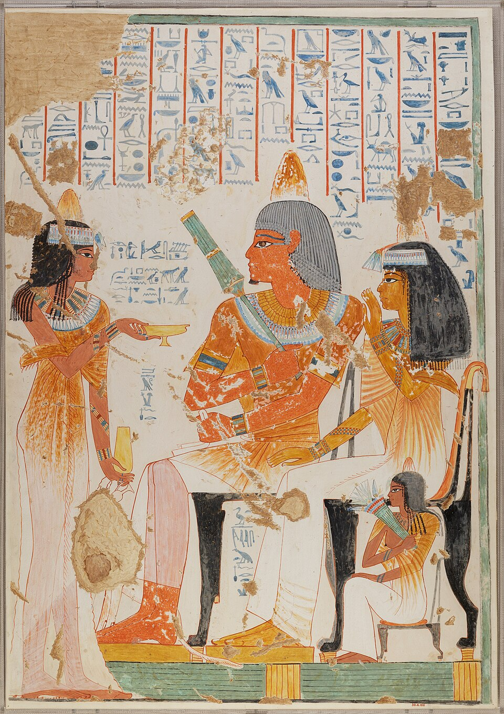

ANCIENT MASTERPIECE
NEBAMUN RECEIVING WINE

Ancient Egyptian Art
18th Dynasty
Ancient Egypt
Tomb of Nebamun
ABOUT THE ARTWORK
Nebamun Receiving Wine is an ancient Egyptian wall painting from the 18th Dynasty. The artwork presents Nebamun in an elegant setting surrounded by servants, plants, and offerings. Its detailed figures and carefully arranged composition provide an insight into the artistic traditions and cultural life of ancient Egypt.